熊本である。
荒尾である。
三池炭鉱あり（今は閉鎖）、荒尾競馬あり（今は閉鎖）、ウルトラマンランドあり（今は閉鎖）、と男の夢がぎっしり詰まっ（てい）た街、荒尾。
ちなみに荒尾出身の有名人といえば
……ヒロシです……
閑話休題。
荒尾といえば以前、
荒尾大師という素晴らしきコンクリ大弘法を紹介させていただいたが、今回紹介させていただくのは
荒尾観音。
名前的に間違えやすいが全然別のお寺なんで気をつけてね。
ちなみに荒尾大師は荒尾市の観光案内にもチラホラ取り上げられることもあるが、こちらの荒尾観音が紹介されているのはまず見たことがない。
というわけで荒尾観音の入り口である。
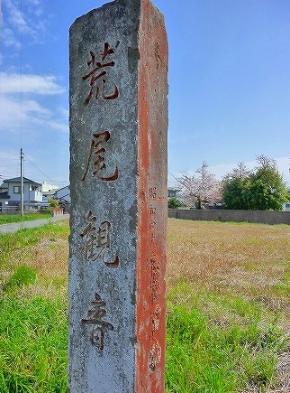
飾り気も何も無いコンクリの門柱。
今にして思えば、
この後の展開を多いに予見させる門柱であった。
参道の大師像の傍らには修養道場の文字が。
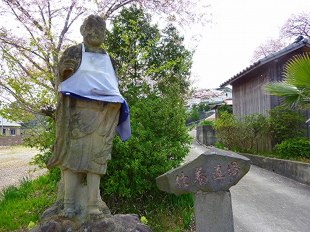
さらに進むとお地蔵さんが。「努力」「勇気」と刻まれた花筒が芳ばしい。
右奥には本堂が見える。本堂がある場所はここよりも少し小高い丘の上に経っているようだ
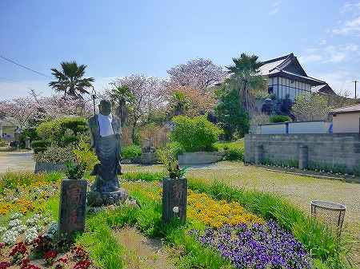
…と、この時点で本堂の下に
何やら不穏なシルエットがチラホラ。
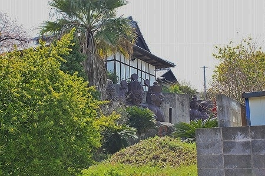
近寄ってみると…
ぬぅおおおおおお〜！
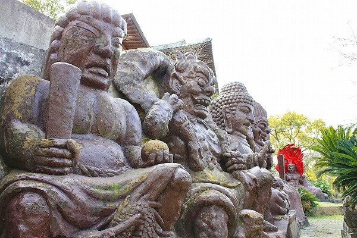
コンクリートで出来た巨像が本堂直下の擁壁に寄りかかるように並んでいたのだ。
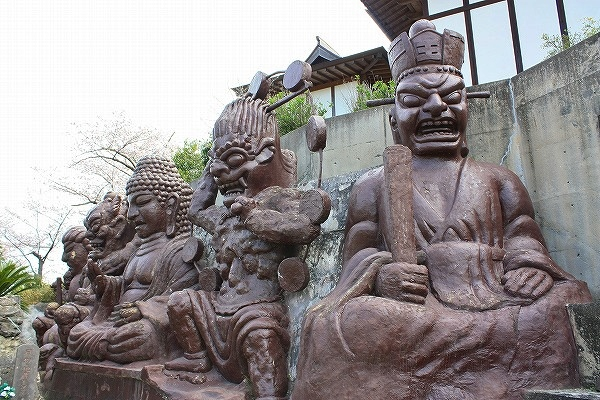
大きさはざっと観て
6〜7ｍといったところか。
個々の仏像のサイズ以上に
圧迫感がハンパない。
それは一体一体の仏像の
距離が近いのと仏像自体の
インパクトが強烈な所為であると考えられる。
だって、こんなですからね。
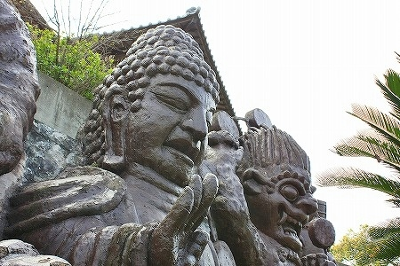
こんな素晴らしい巨像群が世に知られず存在すること自体が私にとっては驚きであった。
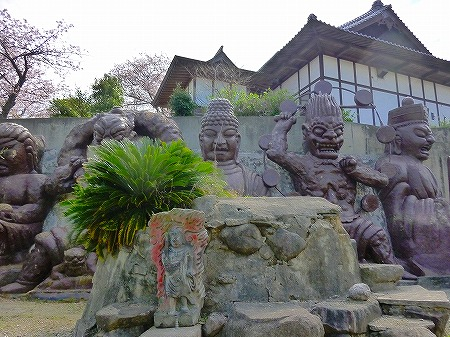
褐色の肌、てらてらしたマチエール、フリーキックの壁のごとく隙間無く並ぶポジショニング。
まるで汗まみれになっているオッサンがぎゅうぎゅう詰めになっている狭いサウナにうっかり入ってしまったかのような猛烈な圧迫感！
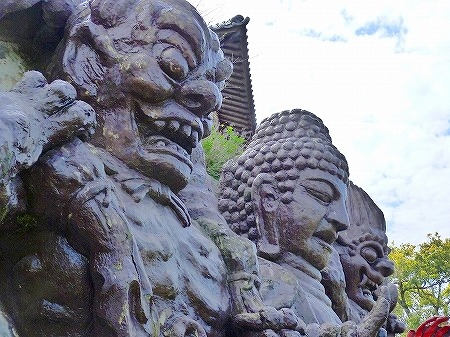
特に
風神、雷神のお二方は怪獣と見分けが付かない程ステキないでたち。
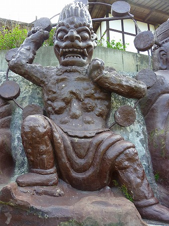 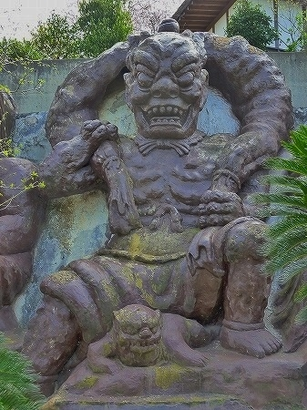
おっと。
こちらの千手観音（なのか？）も忘れてはバチがあたるレベルの素晴らしさ。
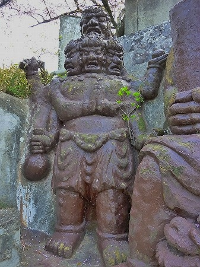
強烈な仏像群を前に、うっとりして頭の中がお花畑だらけ。
気が付けば
脳内麻薬がドバドバドバ〜っと絶賛分泌中！モチロン自己生成物だから合法だよ！
さらに奥にはこんな面々が。
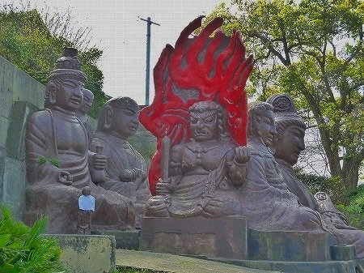
一体、何処まで続くのだ！この素晴らしき脳内楽園！
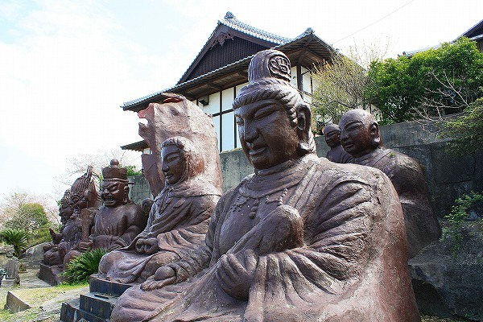
様々な仏像や僧形が並んでいるが、その表情は皆一緒。
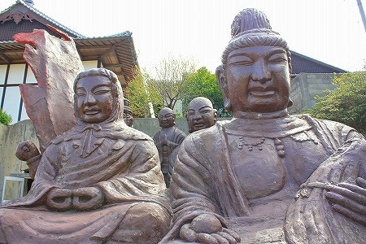
遮光器土偶（通称シャコちゃん）にクリソツなその表情。
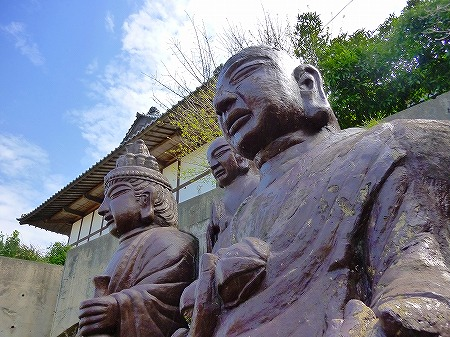
チョット煽ってみました。
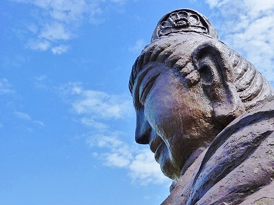
ファイヤーパターンが独特な不動サマ
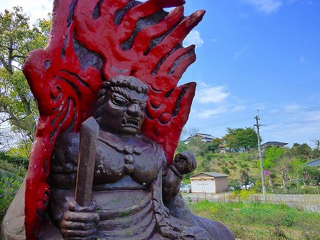
お隣の方は赤ん坊を抱いているではないか！
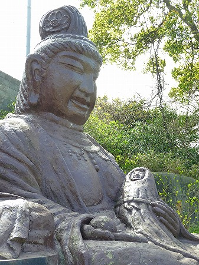
赤ちゃん、カワイ〜…く…ない…
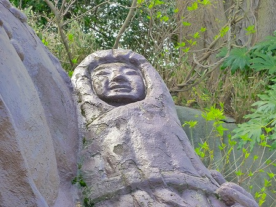
周辺には住職の句碑などもあり、徹底してコンクリメイドの空間であった。
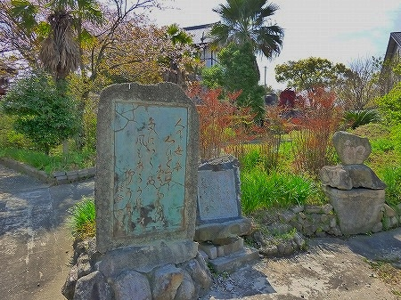
心、心、心…これは石か。
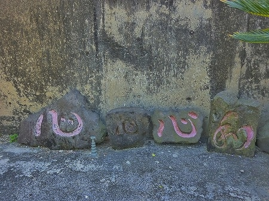
観音授長壽岩風呂とな！見当たらなかったが、境内のどこかにお風呂があったのだろうか？不覚なり。
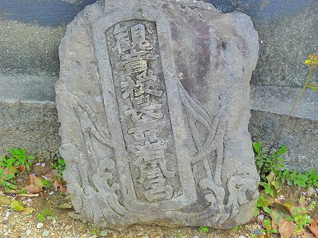
そんな巨像群の傍らに扉があった。
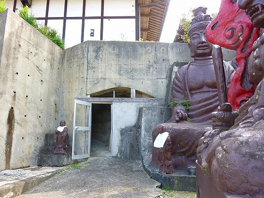
扉の先は
トンネルになっているようだ。
扉の真上にあるのが本堂。この本堂は少し高台に建っており、その直下をトンネルが横断しているようだ。
早速入ってみよう。
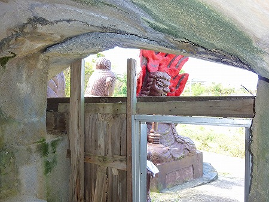
カーブのかかったトンネルなので外光が入りにくい。手持ちのライトで照らしながら進むと出口の明かりが見えてくる。
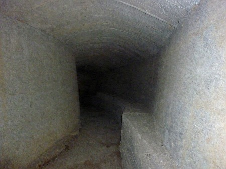
…と出口は机のようなもので塞がれていた。
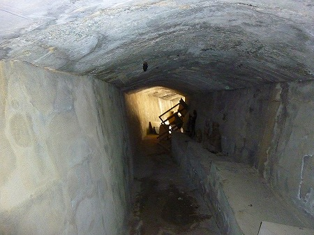
仕方がないので一旦、来た道を引き返し、再びトンネルの出口方面に回りこんでみよう。
というわけで再び外へ。境内には様々な祠や石像が点在している。
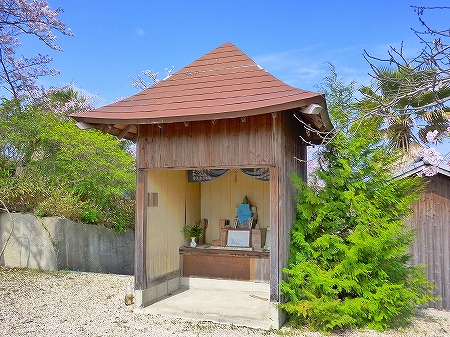
手足の病の平癒祈願に奉納された
手形足型。
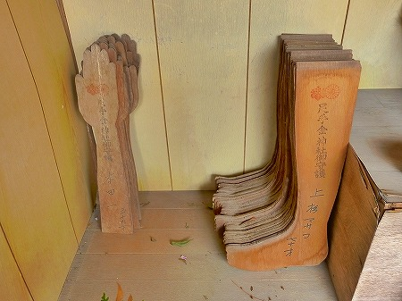
変わった形の灯籠。勿論コンクリ製。
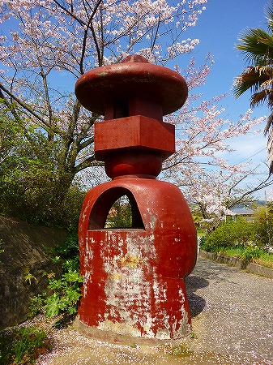
九州では不動サマの石像は塗られているのが当たり前。でもこの色使いは凄いねー。
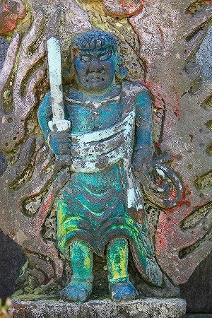
というわけで先ほどのトンネルの出口に到着。
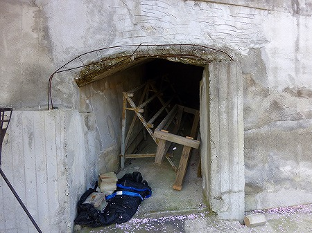
出口の庇などは鉄筋が剥き出しなってる。未完成なのだろう。
傍らにあった石碑。
厄除洞窟とある。
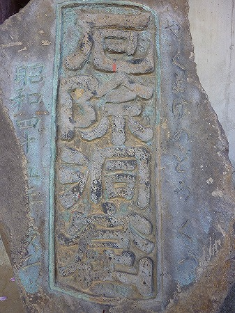
洞窟が完成したのが昭和45年とある。
つまり先ほどのコンクリの巨像もその頃に出来たのではないかと考えられる。
で、出口の横を見れば…
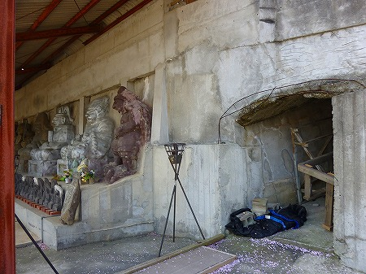
こちらにも
素晴らしきコンクリ像ご一行様がズラリと！
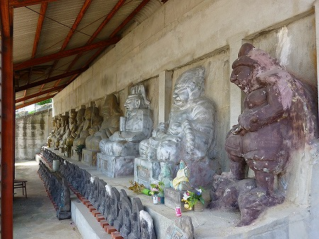
先ほどの巨像群に比べるとサイズは小さめだが、造形のインパクトでは負けていない。
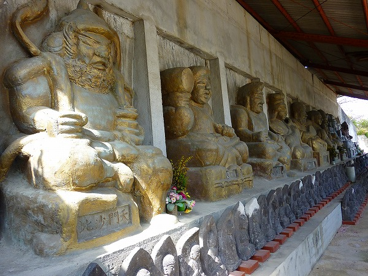
金色の像が七福神、銀色の像が天神と昆比羅大権現とあった。左右の茶色い像は…チョット判りませんでした。
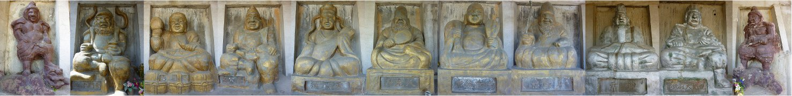
七福神の手前には数多くの石仏が並んでいた。
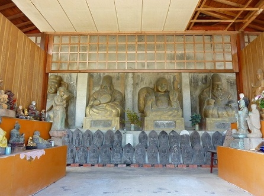
この崖全体が屋根で覆われており、横長のお堂のようでもあった。
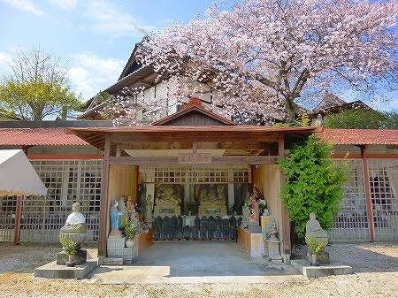
ちびまるこちゃんに出てきそうなな観音サマや
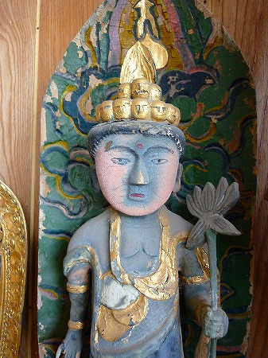
真ん中わけのおっかさん
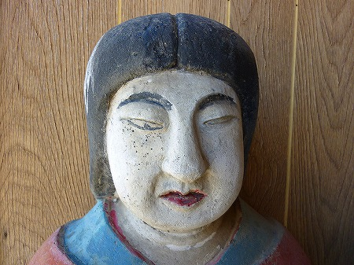
緑色のカミサマなどアクティブな色使いが印象的だった。
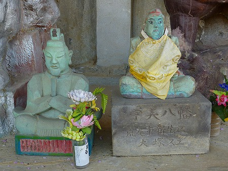
坂道を登り、本堂へ向かう。
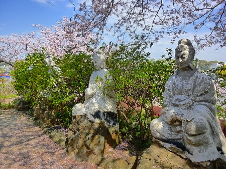
本堂に参拝後、崖の上から先ほどの巨像を見下ろす。
閻魔さまの頭頂部が目の前に。
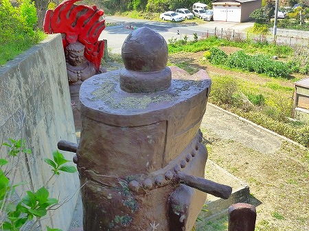
こちらは雷神。
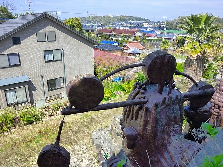
向かいの家とか毎日この巨像に見つめられて生活しているのかー。緊張するねー。
真横から見ると改めてその大きさが実感できる。
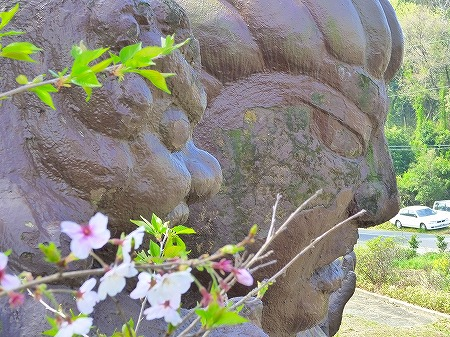
訪れたのは丁度桜の時期。
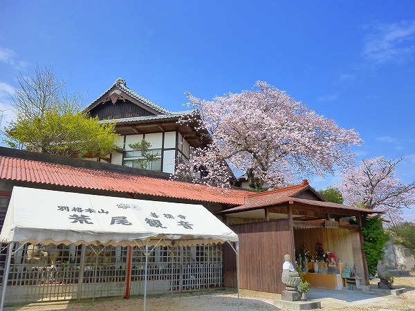
ふんわりとした春風に乗って桜の花びらがひらひらと舞っていた。